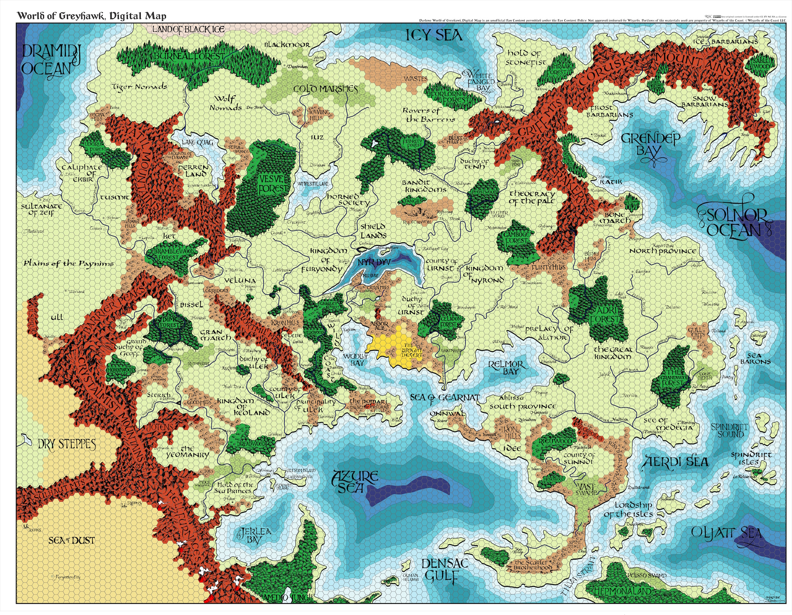

Destination: —
Terrain: —
Distance: — hex(es)
Est. Travel: —
Drag move · Shift+Drag rotate
Wheel scale 0.5% · Alt+Wheel 0.1% · Cmd+Wheel 3%
Shift+Wheel X only · Ctrl+Wheel Y only
Arrows nudge 1px · Shift+Arrows 5px · R reset